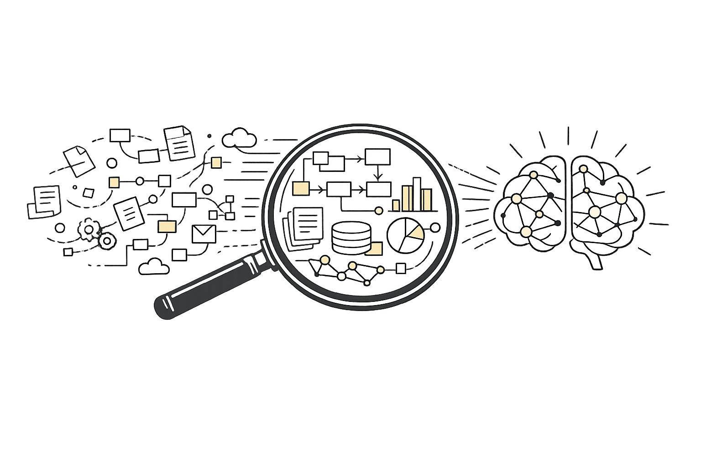
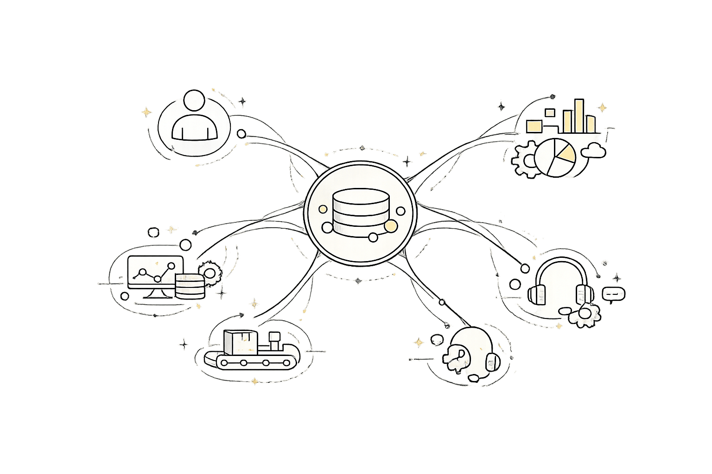
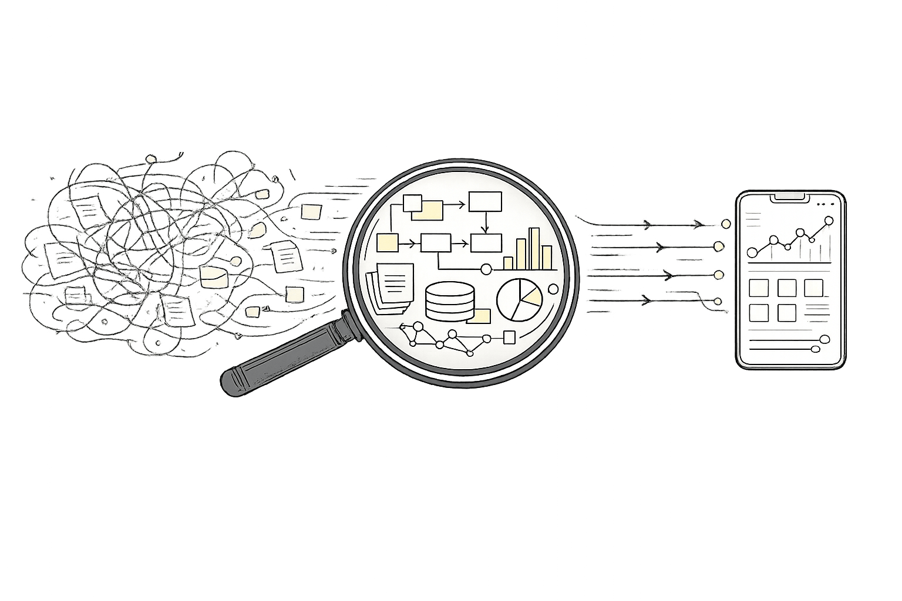
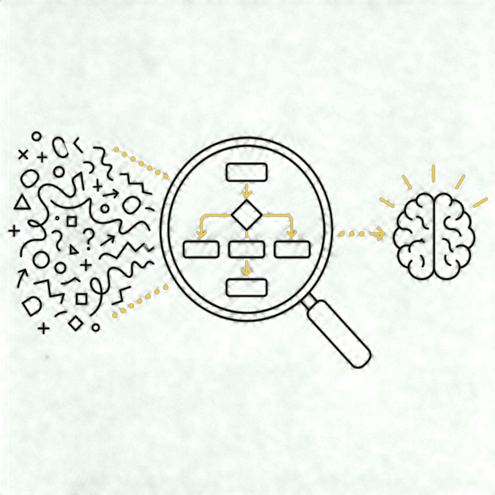
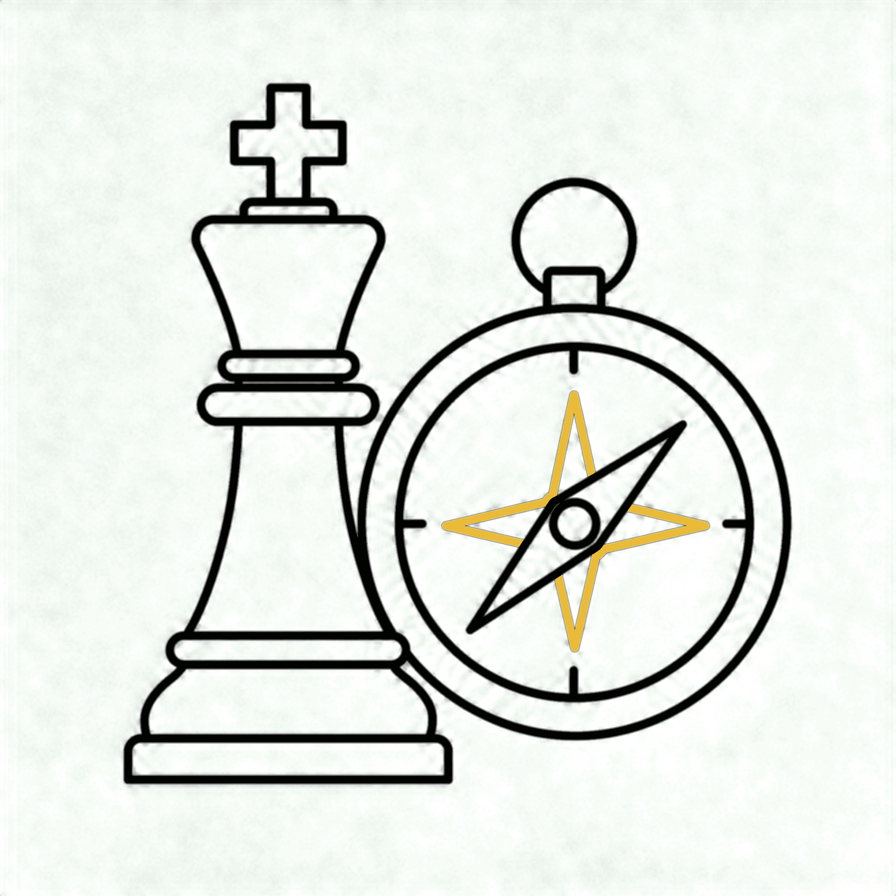
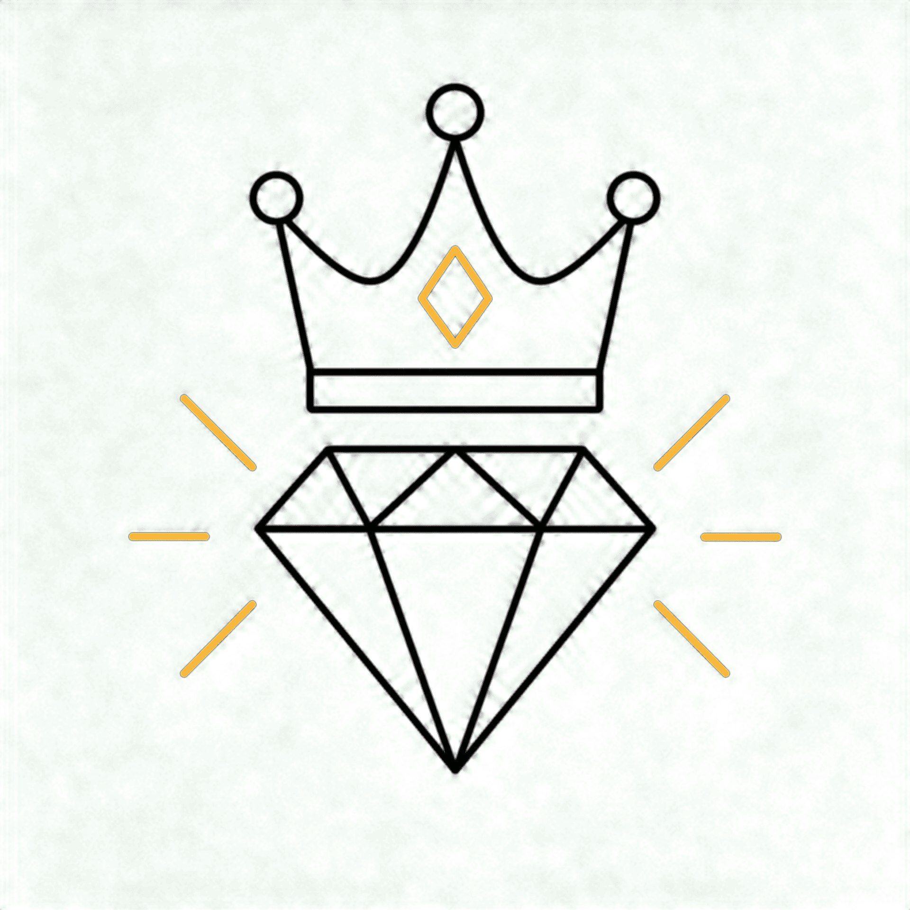
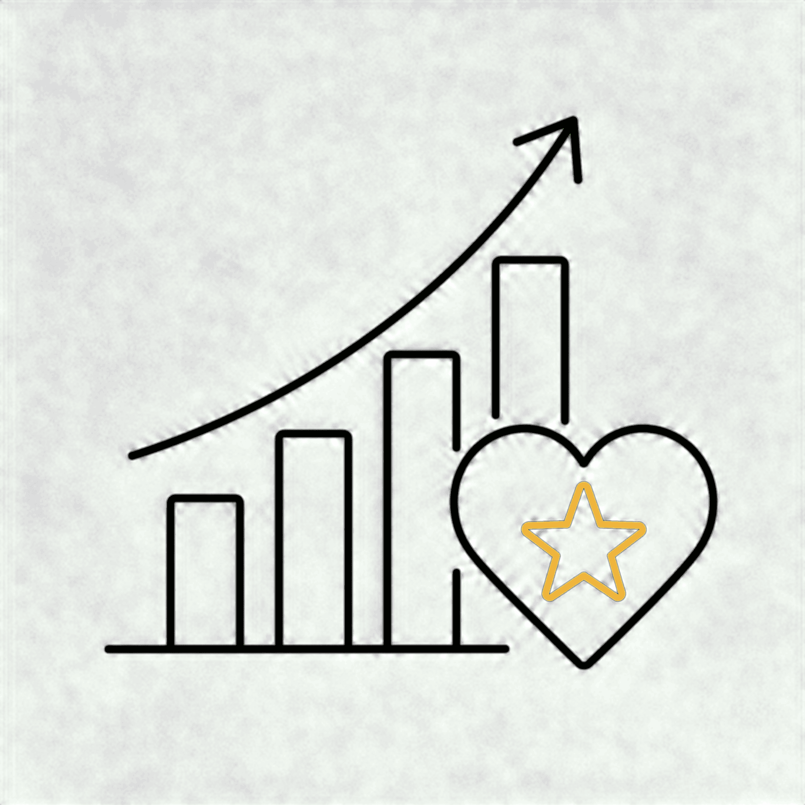
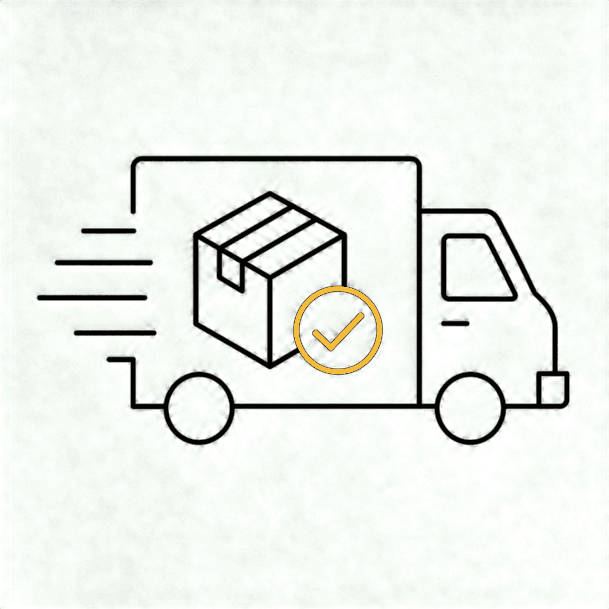
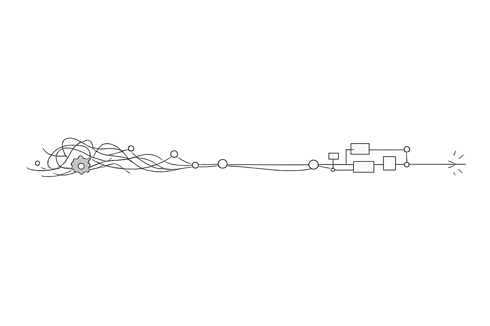
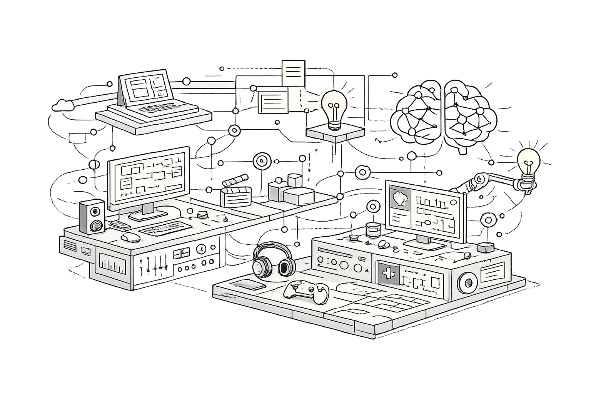

Product Manager
Transformo complexidade em produto.
Entendo rápido o contexto, conecto negócio, tecnologia, operação e pessoas, e transformo isso em decisões e produtos que avançam.
Mais de 15 anos de trajetória entre produto, tecnologia, design e educação corporativa. — Aberta a oportunidades em Product Management/Product Owner · Atuação PT-BR/EN · Remoto ou híbrido/presencial em Uberlândia, MG
02 / O que me diferencia
Entender, conectar e fazer avançar.

Entender
Aprendo rápido domínios complexos
Antes de propor uma solução, procuro entender contexto, regras, operação, linguagem do negócio e o que realmente está causando o problema.

Conectar
Enxergo o produto como um sistema
Produto, tecnologia, clientes, suporte, operação e negócio não são problemas separados. As melhores decisões aparecem quando essas partes entram na mesma leitura.

Fazer avançar
Transformo contexto em ação
Organizo o problema, defino prioridades, crio clareza entre áreas e acompanho a construção até existir algo que possa ser usado, medido e melhorado.
Já estive no detalhe mais operacional e em salas onde planos de negócio precisavam ser defendidos para lideranças. Essa amplitude me ensinou que senioridade não é se afastar da execução. É ter contexto para saber quando aprofundar, quando destravar e quando dar autonomia.
03 / Como eu trabalho
Um fluxo, não uma fórmula.
01

Entender
Aprendo o domínio, a operação, as pessoas envolvidas e o problema antes de decidir o que construir.
02

Estruturar
Organizo informação, separo sinal de ruído, identifico dependências e transformo complexidade em um problema que o time consegue atacar.
03

Conectar
Coloco negócio, tecnologia, clientes, suporte e operação na mesma conversa para reduzir decisões tomadas com contexto incompleto.
04

Decidir
Transformo contexto em prioridades, critérios, requisitos e direção. Nem toda demanda vira produto e nem todo problema precisa de uma nova funcionalidade.
05

Fazer acontecer
Acompanho a execução de perto o suficiente para identificar impedimentos, testar premissas, ajustar decisões e ajudar o trabalho a avançar sem substituir a autonomia de quem executa.

04 / Trajetória
Como cheguei até aqui.
Minha carreira foi um acúmulo de repertório e experiências. Cada fase adicionou uma camada ao modo como penso e trabalho em Produto hoje.
Organizar informação, construir narrativa
Aprendi a organizar informação, construir narrativa e tornar ideias compreensíveis. Trabalhei com redação, diagramação e comunicação visual antes de Produto fazer parte do meu cargo.
2009–2011 · Comunicação e Design
Design Instrucional e aprendizagem de domínio
Desenvolvi centenas de roteiros e experiências de aprendizagem para empresas de setores muito diferentes. Para cada projeto, eu precisava aprender o assunto a fundo antes de conseguir estruturá-lo e ensiná-lo. Trabalhei com sistemas, produtos financeiros, contact center, vendas, negociação, gestão, processos corporativos e produtos industriais. Fui responsável pelo roteiro do onboarding digital da Bayer, reconhecido pelo Learning & Performance Brasil 2018/2019.
2011–2019 · PrismaFS
Comunicação, adoção e Educação de Produto
Aproximei comunicação, produto, suporte, LMS, adoção e melhoria contínua. Foi uma transição natural de criar experiências de aprendizagem para pensar também em como produtos são compreendidos, adotados e evoluídos.
2019–2021 · Marketing / Kanttum
Produto como sistema vivo
Como Coordenadora de Produtos Digitais, participava diariamente das dailies de cinco ou seis frentes de tecnologia e mantinha contato recorrente com Engenharia, QA, UX, CX, CS, Comercial e Suporte.
2022–2024 · Dialog
Complexidade para decisão executiva
Atuei como consultora em Comunicação em vários projetos, transformando temas técnicos e de negócio em apresentações e narrativas para diretorias, conselhos e lideranças C-level de grandes empresas. Essa fase aprofundou minha capacidade de síntese, argumentação e comunicação executiva sem me afastar da realidade operacional.
2024–2026 · Crosara
Produto + construção
Mantenho uma frente independente de P&D de produto sob minha marca, J.BLK, que também assina meus trabalhos freelance. Investigo problemas, desenho experiências, estruturo decisões e construo produtos autorais com apoio de IA. É onde consigo abrir meu processo por completo e testar, na prática, até onde uma ideia pode ser levada.
2026–hoje · J.BLK
05 / Evidências profissionais
Números como contexto.
Não como propaganda.
260→40
Backlog
Mais de 260 itens para menos de 40 em cerca de um ano, após revisão, priorização e organização contínua do trabalho na Dialog.
70%
Adoção de IA
Power AI Creator chegou a cerca de 70% de adoção nos primeiros meses.
5–6
Operação de Produto
Rotina diária acompanhando cinco ou seis frentes de tecnologia, além de contato recorrente com CX, CS, Comercial, Suporte e QA.
360+
Educação corporativa
Centenas de roteiros e experiências de aprendizagem desenvolvidos em múltiplos setores e domínios.
07
O trabalho que posso abrir por inteiro
Grande parte do que desenvolvi profissionalmente está protegida por contratos de confidencialidade, NDA e cessão de direitos. Por isso, não publico interfaces, documentos internos, dados ou informações proprietárias dessas empresas. Nos projetos autorais, consigo mostrar o processo completo: como investigo um problema, estruturo decisões, desenho a experiência e transformo uma ideia em produto.
Produtos que mostram como eu penso


SaaS B2B · Construção civil · Produto autoral
Obra Certa
Uma operação de obra tem pessoas, turnos, registros, comunicação, evidências e decisões acontecendo ao mesmo tempo. O Obra Certa nasceu para organizar essa complexidade em um único produto.
Estruturar uma plataforma capaz de atender diferentes empresas e perfis de usuário sem misturar dados, responsabilidades ou fluxos. A solução precisava funcionar para quem administra a operação e para quem está no campo.
- Arquitetura SaaS B2B multi-tenant e white-label.
- Perfis distintos de acesso para administração, gestão, encarregados e trabalhadores.
- Controle de ponto com geolocalização, escalas, livro diário de obra e comunicação interna.
- Relatórios em PDF e recursos de IA para apoiar consultas e organização da operação.
- Experiência desenhada para desktop e uso móvel em contexto operacional.
Concepção do produto, definição do problema, arquitetura de informação, fluxos, regras, UX, prototipação, especificação, priorização, testes e construção com apoio de IA.
Status: produto autoral funcional, com plano de negócios completo e landing page de contratação prontos. Aberta a propostas de aquisição total do projeto.


Ferramenta educacional · TEA e TDAH · Acessibilidade
Neuro Lens
Traduzir critérios complexos para uma experiência compreensível exige cuidado com linguagem, estrutura, acessibilidade e limites do próprio produto.
Criar uma ferramenta educacional de apoio à triagem de padrões associados a TEA e TDAH baseada nos critérios do DSM-5, sem transformar o produto em diagnóstico e sem substituir avaliação profissional.
- Quatro perspectivas de preenchimento: autopercepção, olhar do parceiro, avaliação combinada e versão para responsáveis por crianças.
- Linguagem estruturada para tornar critérios técnicos mais compreensíveis.
- Uso gratuito, sem cadastro e sem coleta de dados pessoais no fluxo principal.
- Ênfase em acessibilidade, clareza e responsabilidade na comunicação.
Pesquisa de domínio, arquitetura do conteúdo, definição de fluxos, UX Writing, design da experiência, prototipação, regras do produto, testes e construção com apoio de IA.
Status: Produto autoral disponível para uso educacional. Não é ferramenta diagnóstica.
08 / Projeto independente · Moda sensorial · Inclusão
Proteção sensorial com linguagem de moda, não de dispositivo clínico.
O SensoryShield é um projeto autoral, concebido e desenvolvido integralmente por mim, da proposta de valor ao produto: combinando conforto sensorial, funcionalidade e uma estética que não reduz a pessoa à sua necessidade de proteção.

A ideia
Criar uma peça premium para pessoas com alta sensibilidade sensorial, incorporando recursos de proteção à própria roupa em vez de exigir acessórios separados ou uma estética médica.
Elementos do conceito
- Duplo capuz pensado para reduzir estímulo luminoso.
- Elementos acústicos integrados ao desenho da peça.
- Fechamentos silenciosos e detalhes que evitam estímulos desnecessários.
- Mangas alongadas, thumbholes e construção pensada para conforto sensorial.
- Materiais, costuras e acabamento definidos como parte da experiência do produto.
Minha atuação: pesquisa, conceito, posicionamento, proposta de valor, experiência, especificações do produto, identidade, comunicação e desenvolvimento integral do projeto. Status: projeto independente, ainda sem operação comercial.


Aberta a conversas sobre parceria estratégica, licenciamento ou aquisição do projeto.
Conversar sobre o SensoryShield →09
J.BLK | P&D independente
J.BLK é minha marca: é por ela que assino projetos independentes e trabalhos freelance. Cada projeto nasce de uma dor real que identifiquei, e é sempre desenvolvido com visão de negócio: modelo, posicionamento e viabilidade fazem parte do processo, não só a solução. É onde testo hipóteses, desenho experiências e transformo ideias em protótipos e produtos funcionais com apoio de IA.
Estou aberta a conversas sobre ceder o uso das ferramentas de psicologia, TEA e neurodivergência desenvolvidas aqui. A J.BLK não é apresentada como evidência de vendas, clientes ou tração que ainda não existem: o valor está no trabalho construído e na capacidade de levar uma ideia do problema à solução funcional.
10
Outras coisas que construí
Nem tudo que construo precisa virar negócio. Alguns projetos existem porque eu quis entender um problema, testar uma ideia ou descobrir até onde conseguia levá-la.

Tem um problema de produto que exige contexto, clareza e execução?
Estou aberta a oportunidades em Product Management em que eu possa assumir problemas relevantes, trabalhar perto de negócio e tecnologia e contribuir do entendimento inicial à evolução do produto.